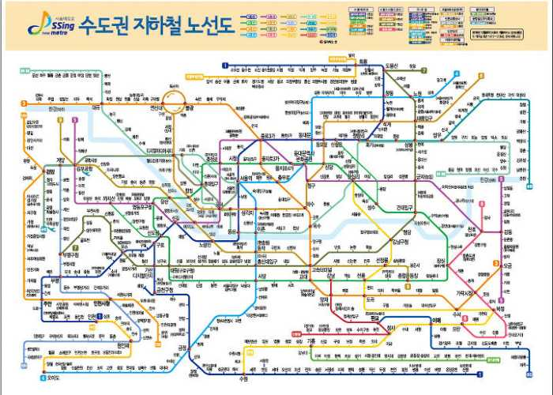
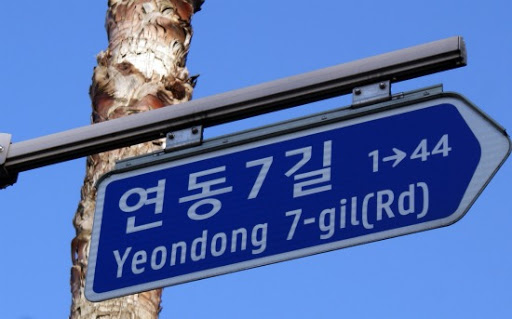

Frequently Asked Questions
Is it necessary to rent a car to travel? -The answer will be different depending on where you are traveling, but we would say the answer is NO. Most places in the downtown area of Korea are easy to get to by using public transportation. Korea is one of the countries with good public transportation, so you can easily find buses, subways, and taxis wherever you go, and it is arranged so that foreigners can easily find the way. Especially if you plan to travel in the city, it will be faster to use public transport due to heavy traffic.
I can't speak Korean at all, can I travel? -Do not worry. If you can speak English, you will probably enjoy traveling easily. In most areas of Korea, both Korean and English are used for signs, road signs, public transportation, menus, etc. So you can easily find English wherever you go, and there are signs and information written in English at tourist destinations. Also, Koreans are a very friendly people to foreigners, so you can easily make friends and get their help.
